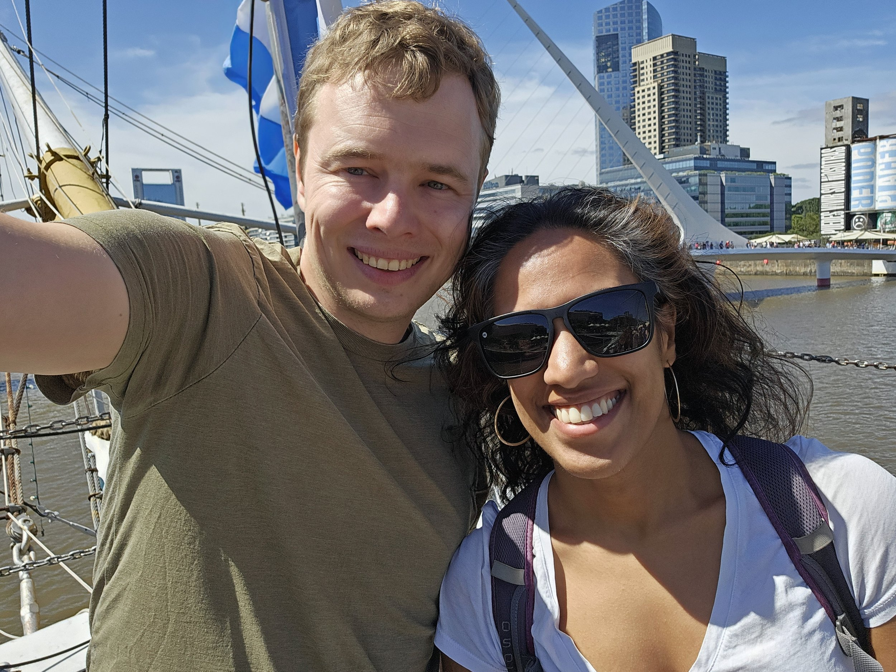
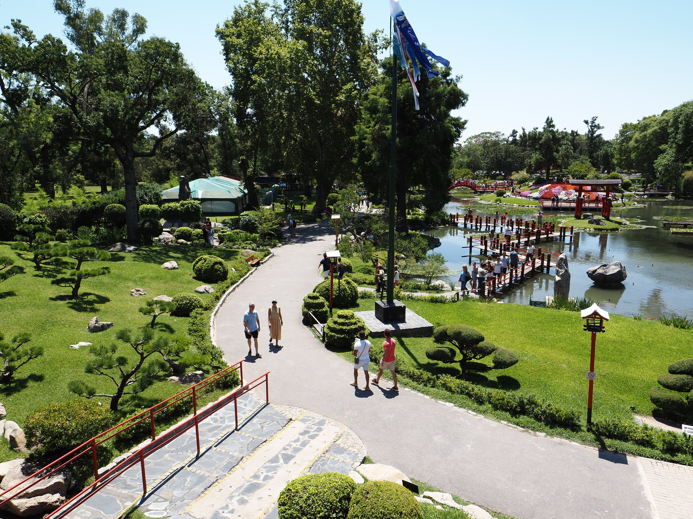
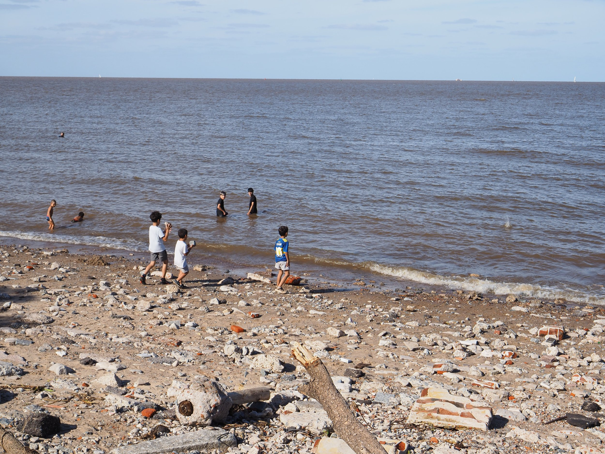
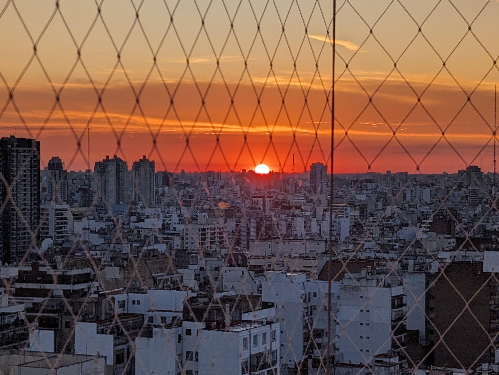

It’s hard to believe that it’s been nearly a week already since we left Ohio for Argentina. I’m currently on a flight from Iguazú back to Buenos Aires. We started our trip in Buenos Aires, which was a bit unexpected. We were thinking about starting our trip in Chile or Peru but decided to take advantage of the good weather in the far southern parts of the world this time of year and decided to aim for Ushuaia. All flights to Ushuaia had a stop in Buenos Aires so we figured, why not spend a few days there to start.
Buenos Aires (commonly abbreviated to BsAs) is a fascinating city. We’d heard many glowing reviews about the city from friends and acquaintances who had previously visited. If I’m honest though, I didn’t immediately take to the city in the same way though it certainly grew on me as time passed. I think we ended up getting a rather odd (skewed?) impression of the city due to extraordinary factors. Shortly before we had arrived, there had been severe flooding in the city which had broken various infrastructure: two of our Airbnb’s elevators had broken and several shops had signs saying that due to flooding, something or other had been broken and they had to close shop. Second, and we realized this literally in our taxi to the airport to leave Buenos Aires, it was Shrove Tuesday (or Pancake Tuesday). We did wonder why so many people were out and about on Tuesday, including tons of people watching planes take off from Buenos Aires City airport. So that’s why so many restaurants and shops were closed!
>

Our first days in the city were pretty “touristy.” We visited the Recoleta and Palermo neighborhoods, hitting up the popular sights like Recoleta Cemetery, (the church), Teatro Colón, Museum of Fine Arts, the many Parques (e.g. Jardín Japonés), and El Ateneo (a theater turned bookstore). We had a wonderful walking tour that took us through the Microcentro where we stopped by the old city hall in a Colonial-era building which is now a museum. The sights were all lovely; it was great to take tours of places as it gave a bit of background about the city and I would highly highly recommend the walking tour that touches on a wide array of topics beyond just the sights, including discussion about the history, economics, politics, sports, and culture. At times, I really felt like we were in a European city: the Microcentro felt like Paris with it’s diagonal streets (this, it turns out, was an intentional choice to make it feel like Paris during a period of prosperity in Buenos Aires), Puerto Madero felt like Copenhagen, and Recoleta a bit like Italy (also not wholly unexpected due to the high percentage of Argentinians who have Italian ancestry). Tons of neoclassical sculptures and architecture throughout the city could make you believe you were in Western Europe. Perhaps this is why it took me some time to get used to the city — it took me by surprise.
>

We had quite the adventure trying to navigate the complicated monetary system in Argentina. Argentina has massive inflation at the moment: something like nearly 200% inflation over the last year. My crude understanding is that there are many longstanding factors and policies that has led to the dire situation that it is in now but additionally, last year Argentina went through an awful drought that decimated their main export crop, soy, which has exacerbated the issue. This inflation has resulted in a huge demand for US dollars, but to avoid dependency on a foreign currency, the official US dollar exchange rate is only about two thirds of the rate you can get on the “blue market” (850 pesos at the official rate versus 1250 pesos on the “blue market”). Getting the “blue market” rate involves finding somewhat sketchy cambios (Calle Florida is famous for them) or sending money to yourself through Western Union and then withdrawing pesos. We ended up mostly exchanging money at Western Unions or other less sketchy cambios (i.e. cambios that had storefronts) which ended up giving us the “tourist dollar” rate which is about halfway between the official and blue rate. It’s also just a hair more than the credit card rate which is better than official but less good than tourist dollar or blue. So the short version of that is blue is better than tourist dollar which is better than credit card which is better than the official rate. In the future, we would definitely instead use the “send money through Western Union” option as it seems to be the most convenient (no need to carry around piles of cash) and gets one of the best rates. Though all that said, who knows what the economic situation will be like… it is fast changing and Argentina just elected a new president last year.
Our favorite day was our last — we spent the day in San Telmo and Puerto Madero without any set schedule. We attempted to visit El Zanjón de Granados (an old mansion with hidden tunnels underneath) but it was closed due to a private tour. So we ended up strolling around, visiting the San Telmo Market, taking pictures with random cartoon characters (that I still don’t know what cartoons they are from), visiting a cool retired ship, and accidentally taking a nap in a random parque in Puerto Madero. I watched an adorable kid go around to every single other kid in the park asking whether they wanted to play soccer; soccer definitely is The sport of the country. We ended our Buenos Aires visit by walking through the Ecologique and then promptly panic-rushed to pick up our bags and head to the airport, as usual.
>

I’m saving the best part of Buenos Aires for last: our Airbnb was magnificent. The pictures on the Airbnb did not do it justice. We had an apartment on the 23rd floor in Recoleta with a gorgeous view of the city and stunning sunsets every single night (except one night when it rained). We spent our very first night of our trip, drinking glasses of a smooth bottle of Mendoza Malbec, watching the sun slowly disappear under the city. It was a perfect way to start our trip.
>

That’s all for now! We’re descending into BsAs city airport now so I’ll shortly get told off for having my tray table down (oh, next time I definitely need to highlight my nifty non-laptop setup that I love). We’re going to relish one last day of warm summer weather before we head to Ushuaia and the mountains! If you made it this far, thanks for sticking around and reading!
Some favorites (skipping the sights that you’ll find in a TripAdvisor list :)):